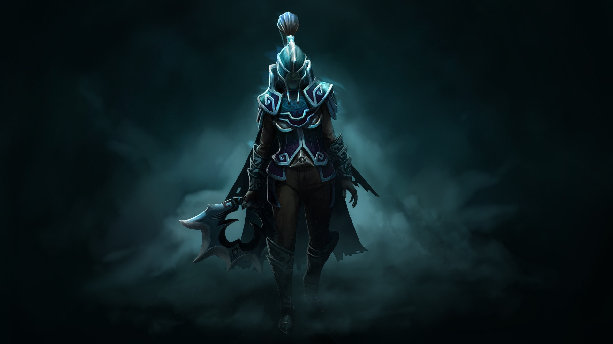
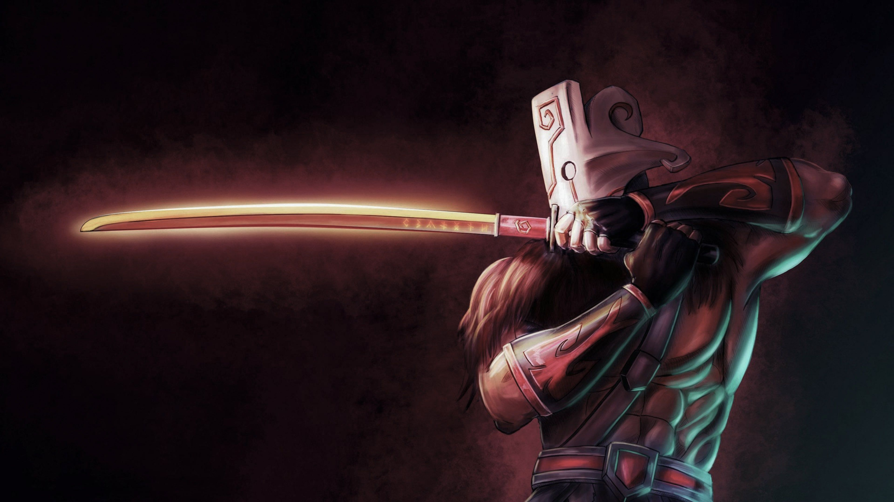
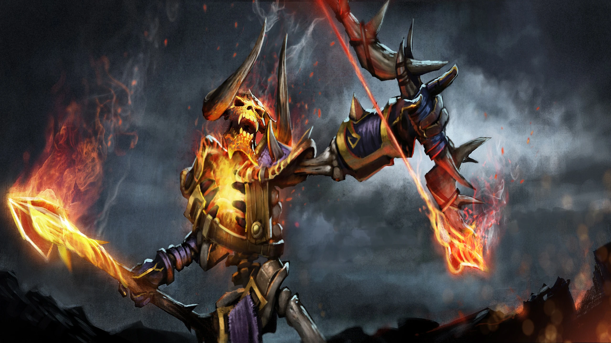
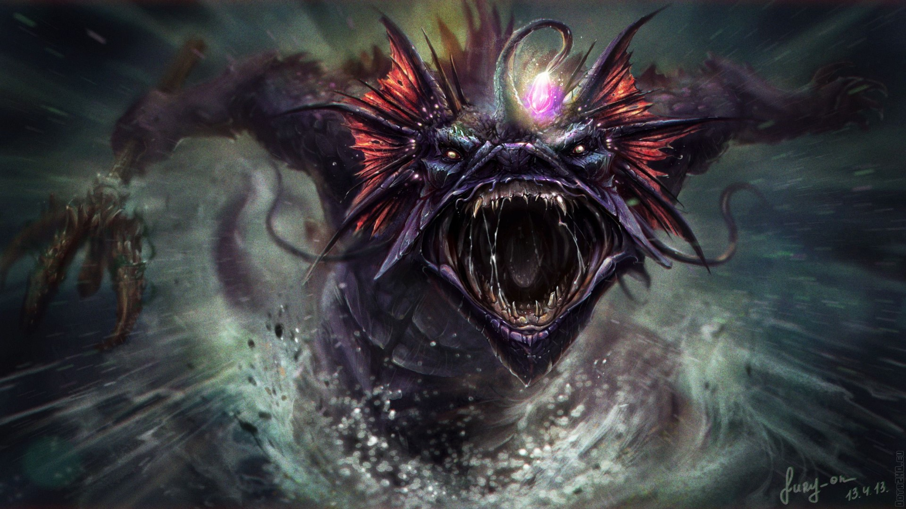
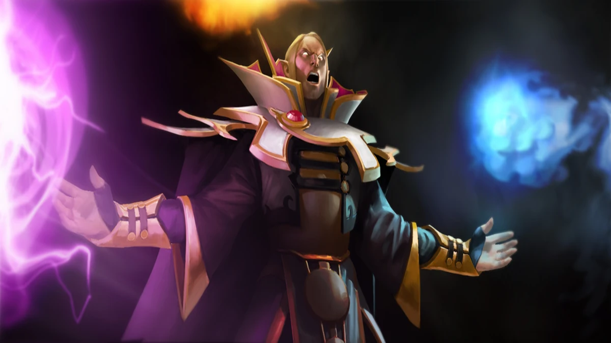
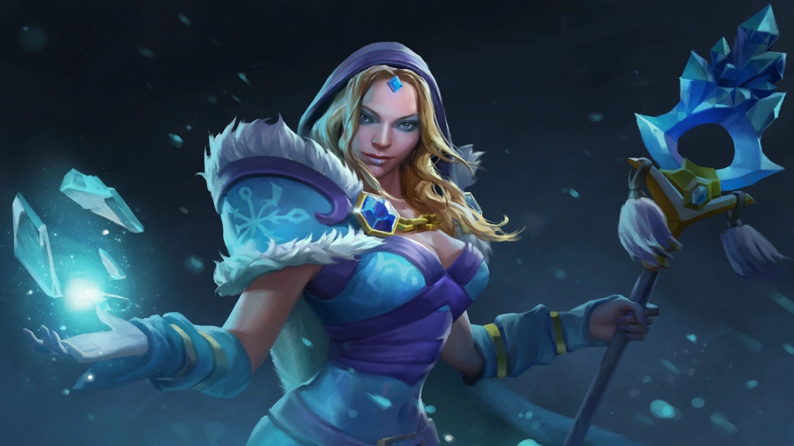

"NO HERO IS SAFE"
Новий герой у світі Dota 2!
Допоможіть команді розробників, оцінивши нового героя за кнопкою знизу!
ОЦІНИТИ
Герої гри

Phantom Assassin
Роль: Керрі
Складність: Висока

Juggernaut
Роль: Керрі, Пушер
Складність: Середня

Muerta
Роль: Керрі, Дізейблер
Складність: Важка

Earthshaker
Роль: Ініціатор, Нукер
Складність: Середня

Clinkz
Роль: Керрі
Складність: Середня

Drow
Ranger
Роль: Керрі
Складність: Середня

Slardar
Роль: Керрі, Танк
Складність: Важка
Tinker
Роль: Керрі, Нюкер, Пушер
Складність: Важка

Spectre
Роль: Керрі
Складність: Важка

Invoker
Роль: Універсал
Складність: Дуже складна

Crystal Maiden
Роль: Сапорт
Складність: Середня

Templar Assassin
Роль: Керрі
Складність: Важка